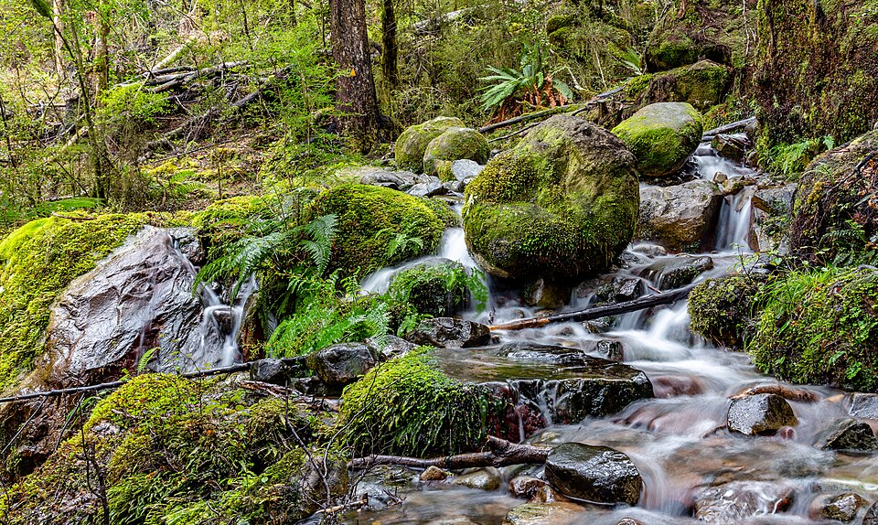
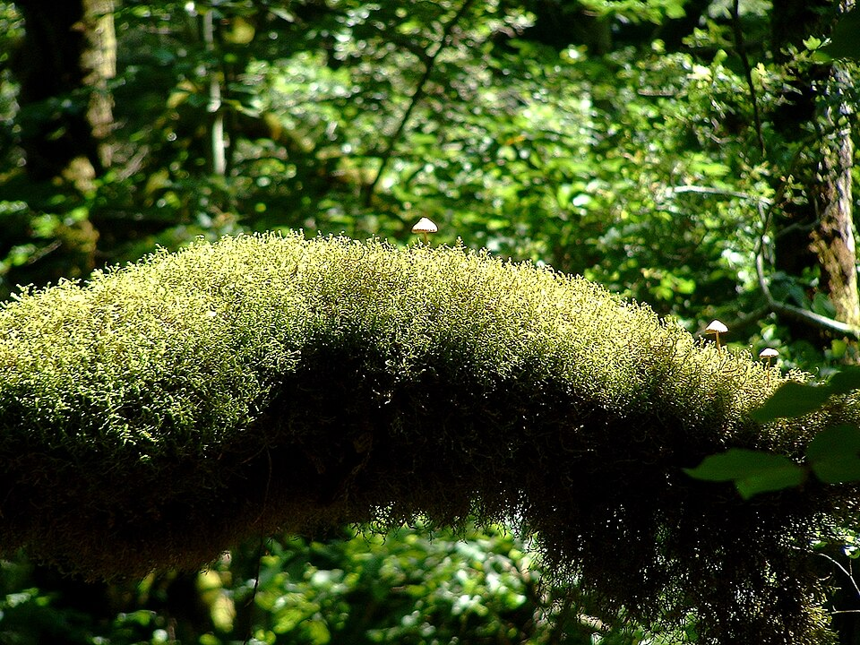
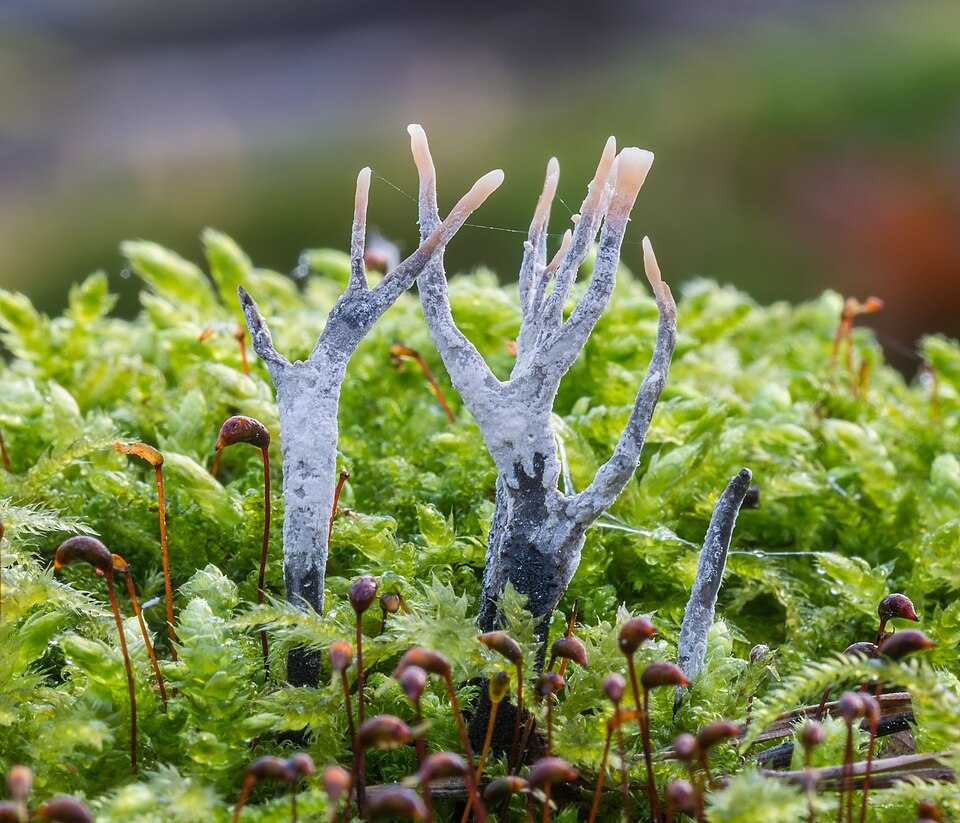
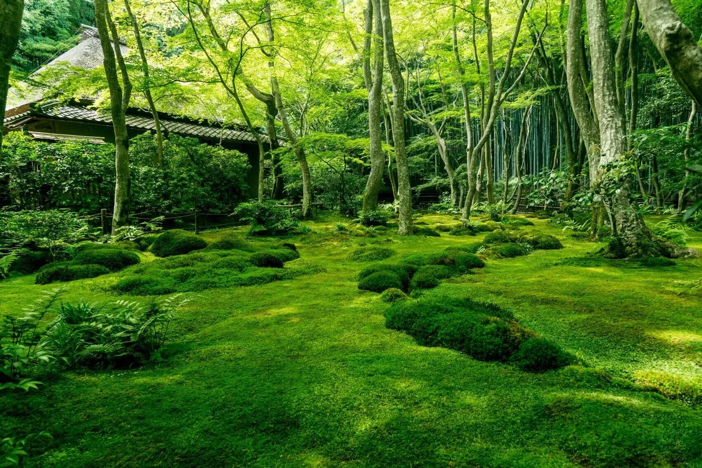
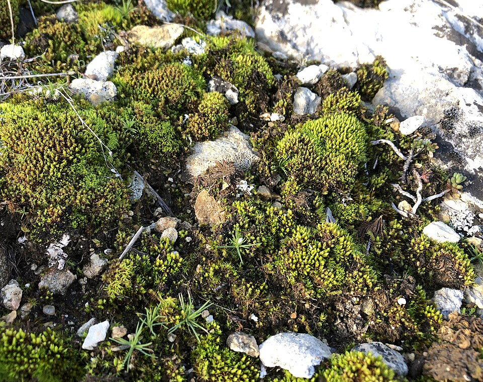
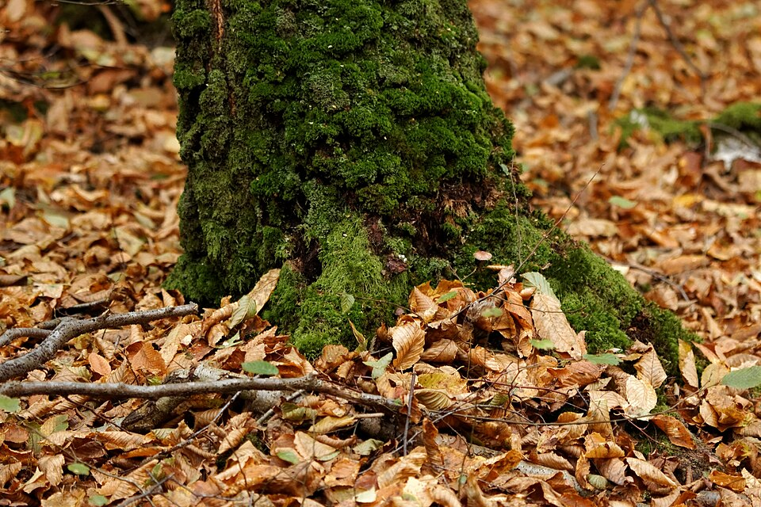
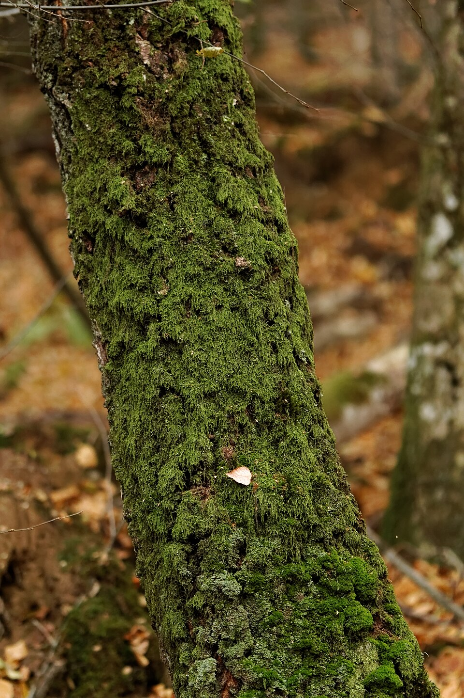
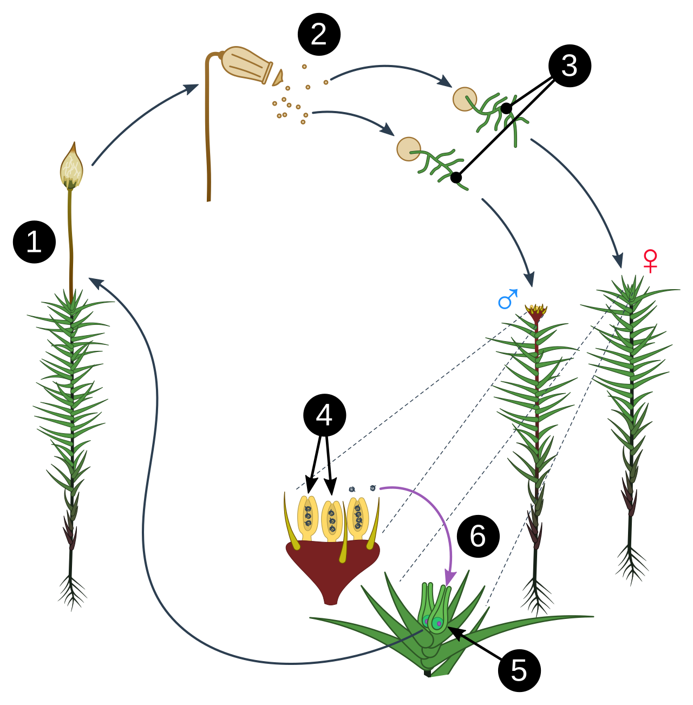
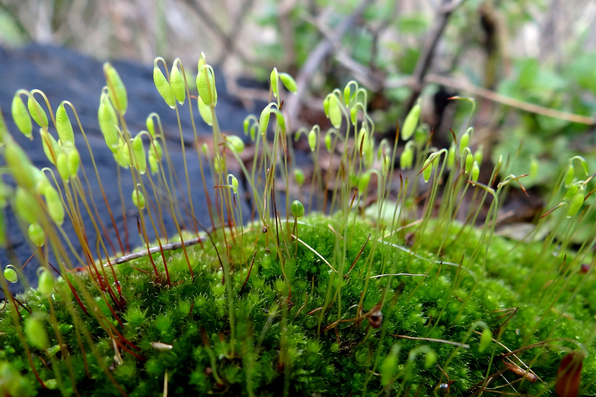

Pionnières de la terre ferme
Accrochées au sol par de fins filaments, les rhizoïdes, les mousses ont contribué à former les premiers sols.
Les premières plantes à avoir quitté l'eau.
Environ 470 millions d'annéesUn jour, il y a près de 500 millions d'années, des algues vertes d'eau douce ont osé sortir de l'eau. Ce long voyage, qui a duré des dizaines de millions d'années, a donné naissance aux mousses : de petites plantes douces qui ont commencé à transformer la roche nue en sol.
Accrochées au sol par de fins filaments, les rhizoïdes, les mousses ont contribué à former les premiers sols.
Leurs cellules reproductrices doivent nager dans une fine pellicule d'eau. C'est pourquoi les mousses sont petites et vivent dans les lieux humides.
Beaucoup de mousses peuvent se dessécher complètement, puis reverdir dès la première pluie. Les sphaignes forment les tourbières, de grands réservoirs de carbone.
.jpeg)

.jpeg)


-3444 (1).jpg)








L'appareil végétatif des mousses est généralement constitué de petites structures ressemblant à des tiges et à des feuilles. Elles ne possèdent pas de véritables racines, mais des rhizoïdes qui leur permettent de se fixer au support. Elles absorbent principalement l'eau et les sels minéraux directement par leur surface.